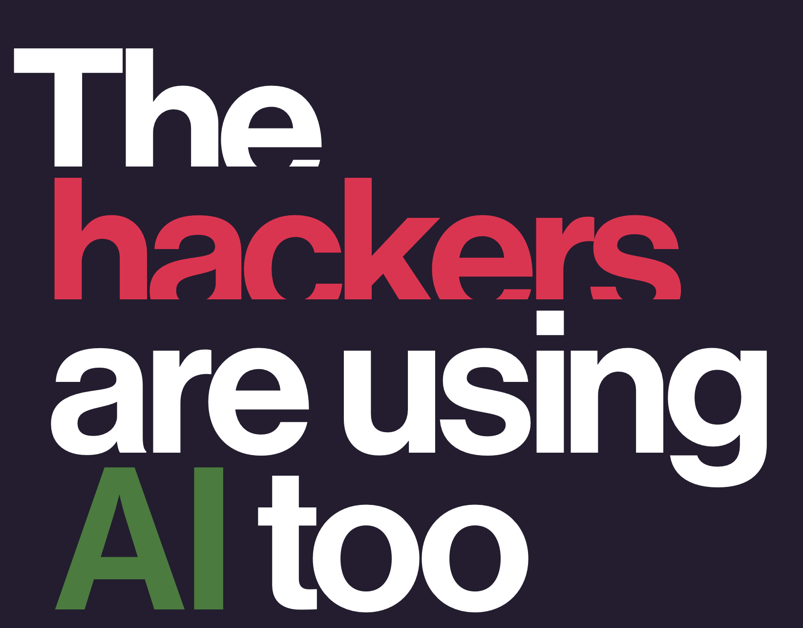
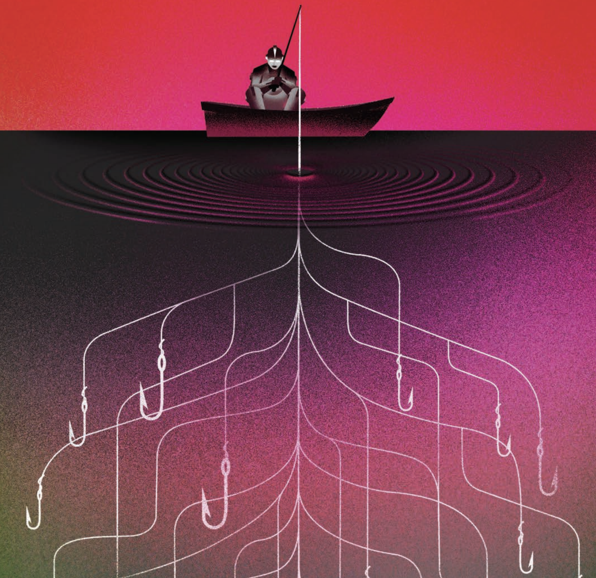
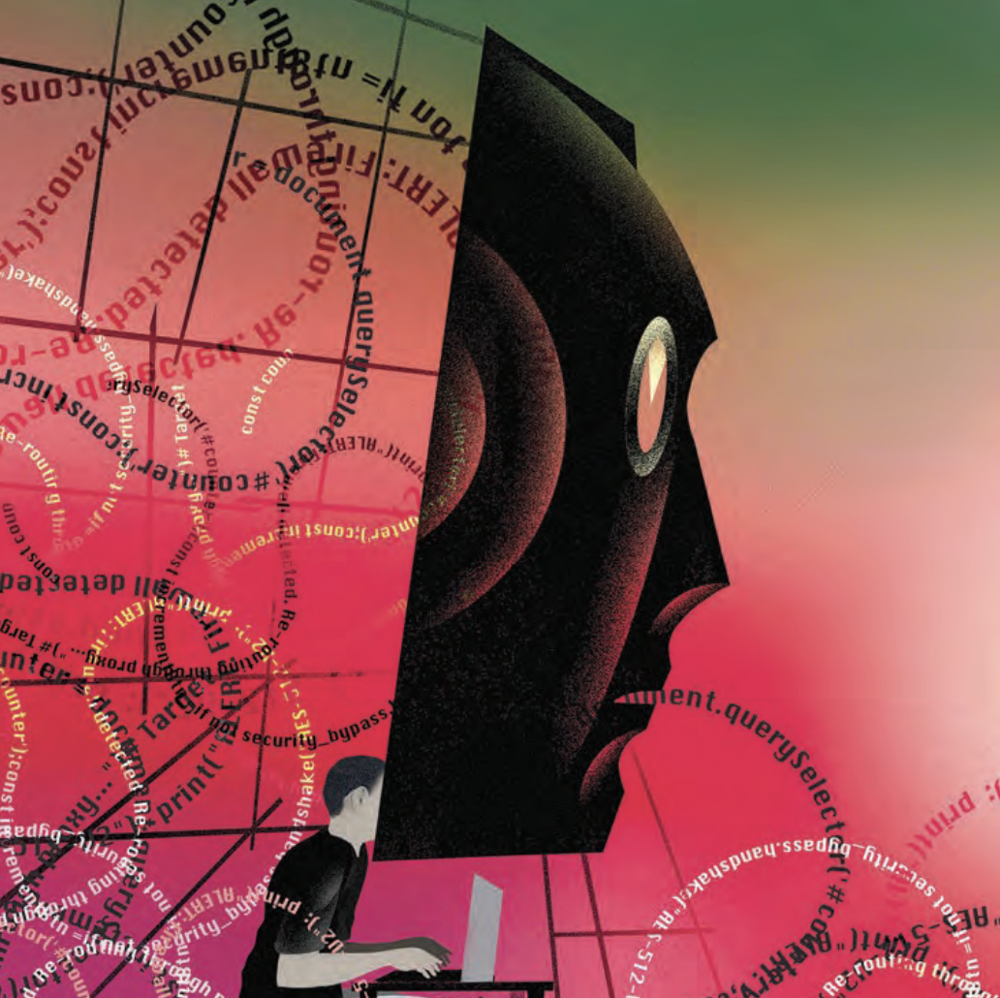
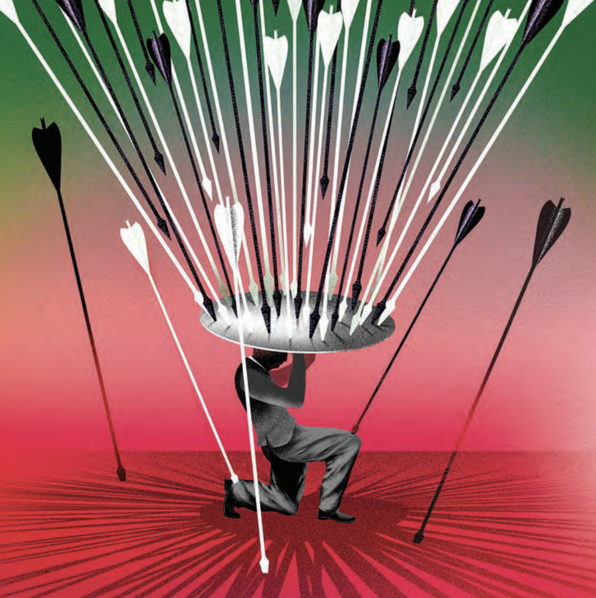

Featured
The Hackers Are Using AI Too: Economic Implications of AI-Powered Cyber Threats
MIT Technology Review — March/April 2026




The rapid adoption of artificial intelligence by malicious actors is reshaping the economic landscape of cybersecurity. AI-driven cyberattacks are driving up costs for businesses and governments worldwide, creating new market dynamics in the global cybersecurity industry.
From an economic perspective, the arms race between AI-powered offense and defense is producing significant externalities: rising compliance costs, increased cyber insurance premiums, and a widening gap between organizations that can afford advanced AI defenses and those that cannot.